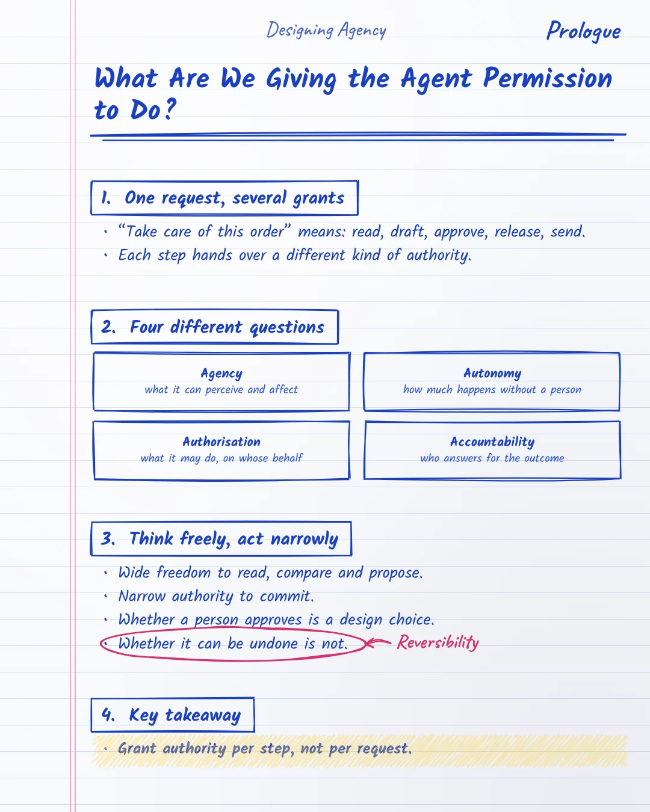

Blog / AI agents and governance / Designing Agency
What are we giving the agent permission to do?
Agency, autonomy, authorisation and accountability are four different questions
A buyer types six words into an assistant: “Take care of this order, please.” It sounds like one instruction. It is really five or six separate grants of authority, and most of the trouble with AI agents in the enterprise comes from treating them as one.
One request, six steps
Follow the order through. The agent reads three supplier quotes and the contract history. It compares prices and terms. It drafts a purchase order in SAP S/4HANA. Someone approves it. The order is released. SAP sends it to the supplier, who starts planning production around it.
Each step asks for something different. Reading quotes needs access to information. Drafting needs permission to create a record that anyone can still change. Approving needs a person with the right to commit the company's money. Sending needs nothing more than a released order, and once it has happened, a supplier outside the company is acting on it.
“Take care of this” does not say which of these the buyer meant to hand over. The system has to.
Four words that are often blurred
Agency is what the agent can perceive and affect: the data it can read and the tools it can use. Damir Safin and Dian Balta of fortiss grade it in five levels, from reasoning over text it is given (L1), through read-only access to outside systems (L3), to writes that are cheap to undo, such as drafts (L4), and writes that are costly to undo, such as final submissions and payments (L5).1
Autonomy is how much happens without a person. Their five levels run from an operator, where a human commands each sub-task, to an approver, where the agent executes but pauses for explicit sign-off before consequential actions, to an observer, where it runs on its own and people monitor and can intervene.1
Authorisation is what the agent is permitted to do, and on whose behalf. In S/4HANA that is ultimately a question of roles and the identity the system executes under, which Part 3 takes apart. UC Berkeley's agentic AI risk profile puts it simply: apply the principle of least privilege when granting agents access.2
Accountability is who answers for the outcome. The same profile lists clear role definitions, intervention points, escalation pathways and shutdown mechanisms as levers of human control and accountability.2
Safin and Balta make one distinction sharper than any other: whether a human must approve an action is determined by the autonomy design; whether the action can be undone is a property of the action itself.1 You choose the first. You inherit the second.
Think freely, act narrowly
The useful consequence is that the four can be set independently. An agent can have wide freedom to read, compare and propose while its authority to commit is narrow. Safin and Balta describe an autonomous monitor: high autonomy, but read-only agency, so it cannot alter any system of record and the risk of a consequential wrong action is minimised. They also describe the opposite, a supertool: powerful, often irreversible capabilities, deliberately kept at low autonomy so a person orchestrates every use.1
For the buyer's order, that suggests a shape. Let the agent roam through quotes, history and contract terms. Let it draft. Keep approval, release and sending where accountability already lives.
Three ways it goes wrong
The AI Safety Atlas sorts AI risks by cause: misuse, where people use a system to cause harm; misalignment, where a system pursues goals other than the ones intended; and systemic risks that emerge from many interactions, with overlap between all three.3
In procurement they look ordinary. Misuse is a supplier's email that steers the agent. Misalignment is an agent that optimises the price and ignores the cap on supplier concentration. Systemic risk is an organisation that slowly stops checking what its agents propose. This series is about designing the boundary so that each of these is caught by something other than luck.
The series
- Choose the action before the agent: which steps can be automatic, which bounded, which human.
- Can you undo what it just did? Restoring, compensating and living with it.
- Whose authority is it acting on? Requester, agent, SAP identity and approver.
- What exactly did the human approve? Binding approval to the terms that were seen.
- When the agent's inputs turn against it: injected instructions and poisoned memory.
- How does an agent earn more autonomy? Evidence for widening authority, and triggers for narrowing it.
- Build the boundary: a small working example.
- When the role is wrong: defence in depth, and what a risk framework is for.
One-page summary

Sources
- Damir Safin and Dian Balta, Autonomy and Agency in Agentic AI: Architectural Tactics for Regulated Contexts, arXiv preprint, May 2026.
- Nada Madkour and colleagues, UC Berkeley Center for Long-Term Cybersecurity, Agentic AI Risk-Management Standards Profile, version 1.0, February 2026.
- Markov Grey and Charbel-Raphaël Segerie, AI Safety Atlas, Risks chapter.